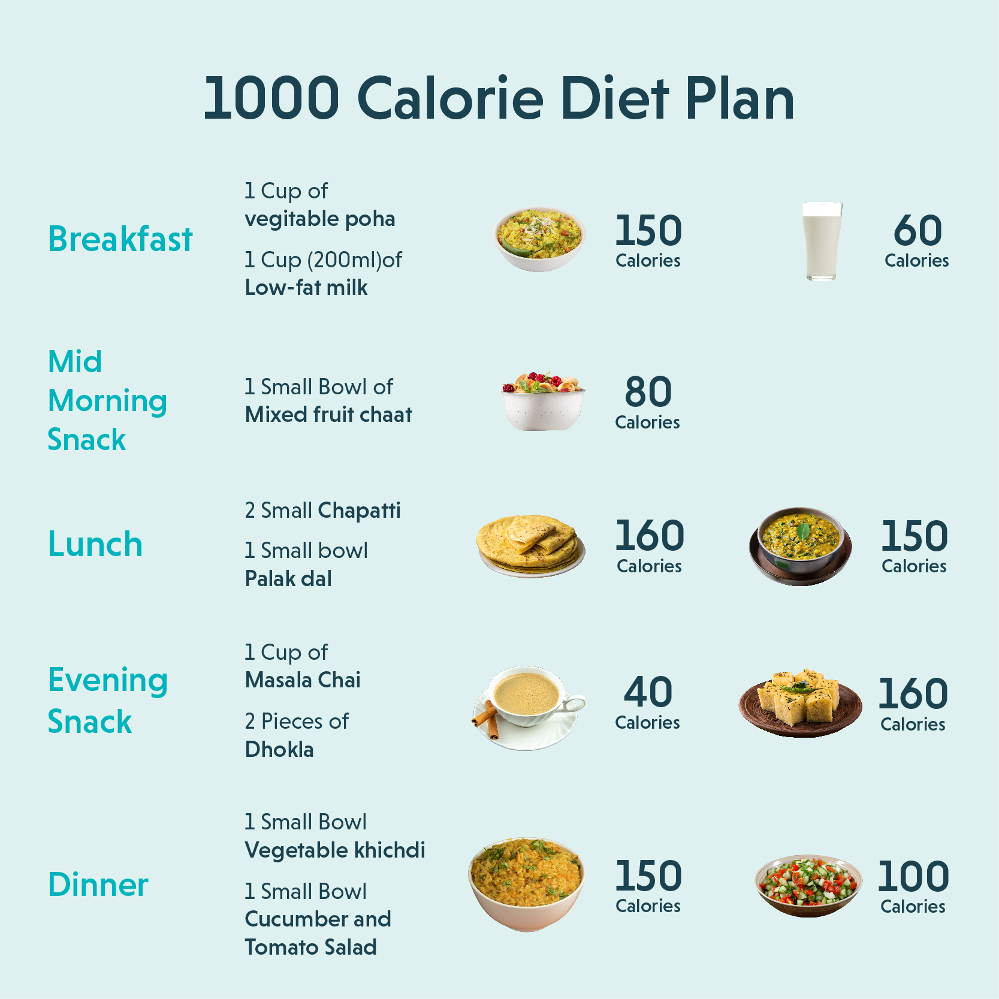

- Home
- About
- Workout
- Transformations
- Contact
-

Hello, how can I help you ?


its healthilicious
Healthy Diet is a promise to create a food culture that is nutritious and delicious at the same time. So enjoy your meal from FIT HUB and stay healthy.
The Calorie Calculator can be used to estimate the number of calories a person needs to consume each day. This calculator can also provide some simple guidelines for gaining or losing weight.
This means eating a wide variety of foods in the right
proportions, and consuming the right amount of food and drink to
achieve and maintain a healthy body weight.
This page covers healthy eating advice for the general population.
People with special dietary needs or a medical condition should
ask their doctor or a registered dietitian for advice.
Genetically some people are predisposed to being overweight, while others struggle to put weight on. The general rule of weight gain is you have to eat more calories than you consume. People who are looking to gain weight slowly should typically consume an additional 300 to 500 calories per day, while people looking to gain weight fast should consume an additional 700 to 1,000 calories daily.
If you exercise more while trying to gain weight, then you have to also add the calories burned during those workouts to your total calorie load. For example, if you were eating 2,000 calories daily & started to burn an extra 600 calories working out each day, you would need to add the above 300 to 500 or 700 to 1,000 calories to the base number of 2,600
"Genetically, some people have a higher metabolism, making it easier for them to stay lean, while others may struggle with weight loss. The general rule for weight loss is to consume fewer calories than you burn. A slow and sustainable weight loss approach typically involves reducing daily calorie intake by 300 to 500 calories, while those looking for faster weight loss may aim for a deficit of 700 to 1,000 calories per day.
If you exercise more while trying to lose weight, you can adjust your calorie intake accordingly. For example, if you were eating 2,000 calories daily and started burning an extra 600 calories through workouts, you would need to ensure your total calorie intake remains in a deficit by maintaining a daily intake of around 1,500 to 1,700 calories, depending on your weight loss goals."
If you're having foods and drinks that are high in fat, salt and
sugar, have these less often and in small amounts.
Try to choose a variety of different foods from the 5 main food
groups to get a wide range of nutrients.
Most people in the UK eat and drink too many calories, too much
saturated fat, sugar and salt, and not enough fruit, vegetables,
oily fish or fibre.
The Eatwell Guide does not apply to children under the age of 2
because they have different nutritional needs.
After the age of 2 years, children should move to eating the same
foods as the rest of the family in the proportions shown in the
Eatwell Guide.
Fruit and vegetables are a good source of vitamins and minerals
and fibre, and should make up just over a third of the food you
eat each day.
It's recommended that you eat at least 5 portions of a variety of
fruit and vegetables every day. They can be fresh, frozen, canned,
dried or juiced.
There's evidence that people who eat at least 5 portions of fruit
and vegetables a day have a lower risk of heart disease, stroke
and some cancers.
Eating 5 portions is not as hard as it sounds. A portion is :
Just 1 apple, banana, pear or similar-sized fruit is 1 portion
each.
A slice of pineapple or melon is also 1 portion, and 3 heaped
tablespoons of vegetables is another portion.
Adding a tablespoon of dried fruit, such as raisins, to your
morning cereal is an easy way to get 1 portion.
You could also swap your mid-morning biscuit for a banana, and add
a side salad to your lunch.
In the evening, have a portion of vegetables with dinner and fresh
fruit with plain, lower fat yoghurt for dessert to reach your 5 A
Day.
Milk and dairy foods, such as cheese and yoghurt, are good sources
of protein. They also contain calcium, which helps keep your bones
healthy.
Go for lower fat and lower sugar products where possible.
Choose semi-skimmed, 1% fat or skimmed milk, as well as lower fat
hard cheeses or cottage cheese, and lower fat, lower sugar
yoghurt.
Dairy alternatives, such as soya drinks, are also included in this
food group.
When buying alternatives, choose unsweetened, calcium-fortified
versions.
These foods are all good sources of protein, which is essential
for the body to grow and repair itself.
They're also good sources of a range of vitamins and minerals.
Meat is a good source of protein, vitamins and minerals, including
iron, zinc and B vitamins. It's also one of the main sources of
vitamin B12.
Choose lean cuts of meat and skinless poultry whenever possible to
cut down on fat. Always cook meat thoroughly.
Try to eat less red and processed meat like bacon, ham and
sausages. Eggs and fish are also good sources of protein, and
contain many vitamins and minerals. Oily fish is particularly rich
in omega-3 fatty acids.
Aim to eat at least 2 portions of fish a week, including 1 portion
of oily fish.
You can choose from fresh, frozen or canned, but remember that
canned and smoked fish can often be high in salt.
Pulses, including beans, peas and lentils, are naturally very low
in fat and high in fibre, protein, vitamins and minerals.
Nuts are high in fibre, and unsalted nuts make a good snack. But
they do still contain high levels of fat, so eat them in
moderation.
Some fat in the diet is essential, but on average people in the UK
eat too much saturated fat.
It's important to get most of your fat from unsaturated oils and
spreads.
Swapping to unsaturated fats can help lower cholesterol.
Remember that all types of fat are high in energy and should be
eaten in small amounts.
Too much saturated fat can increase the amount of cholesterol in
the blood, which increases your risk of developing heart disease.
Regularly consuming foods and drinks high in sugar increases your
risk of obesity and tooth decay.
Eating too much salt can raise your blood pressure, which
increases your risk of getting heart disease or having a stroke.
